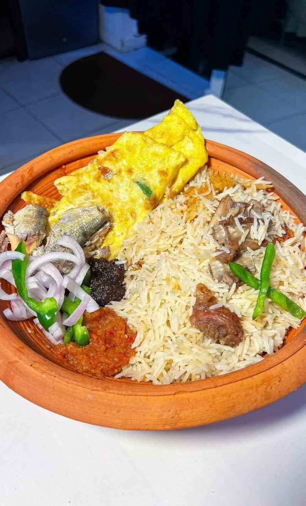

Heyya! let's prepare braised rice!

INGREDIENTS
- 2 cups rice
- 3–4 tablespoons vegetable oil
- 1 large onion, chopped
- 2–3 cloves garlic, minced
- 1 teaspoon ginger, grated
- 2 tablespoons tomato paste
- 1–2 fresh tomatoes, chopped (optional)
- 1 teaspoon curry powder
- ½ teaspoon thyme
- 1 seasoning cube (optional)
- Salt to taste
- 3½–4 cups chicken/beef stock or water
- 1–2 bay leaves (optional)
- Black or white pepper to taste
- 1–2 cups cooked chicken, beef, sausage, or vegetables (optional)
Simple steps
STEPS
- Wash the rice and drain it. Set aside.
- Heat the oil in a pot over medium heat. Add the onions and fry until lightly golden.
- Add the garlic and ginger and stir for about 30 seconds.
- Add the tomato paste and fry for 2–3 minutes. This helps give the rice that deep, rich colour and flavour.
- Add the curry powder, thyme, pepper, seasoning cube, and salt. Stir well.
- Add the washed rice and stir-fry it in the sauce for 2–3 minutes, making sure every grain is coated.
- Pour in the stock/water and add the bay leaves. Stir once.
- Bring it to a boil, then reduce the heat and cover tightly.
- Let it cook for about 15–20 minutes, or until the rice is tender and the liquid has been absorbed.
- Fluff the rice gently with a fork. Add your cooked meat, chicken, or vegetables, if using, and mix.